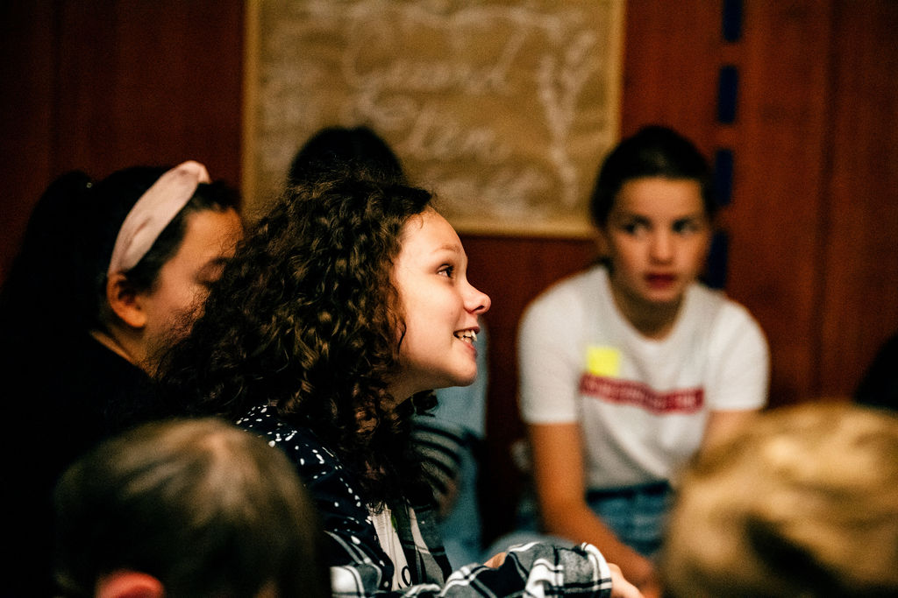
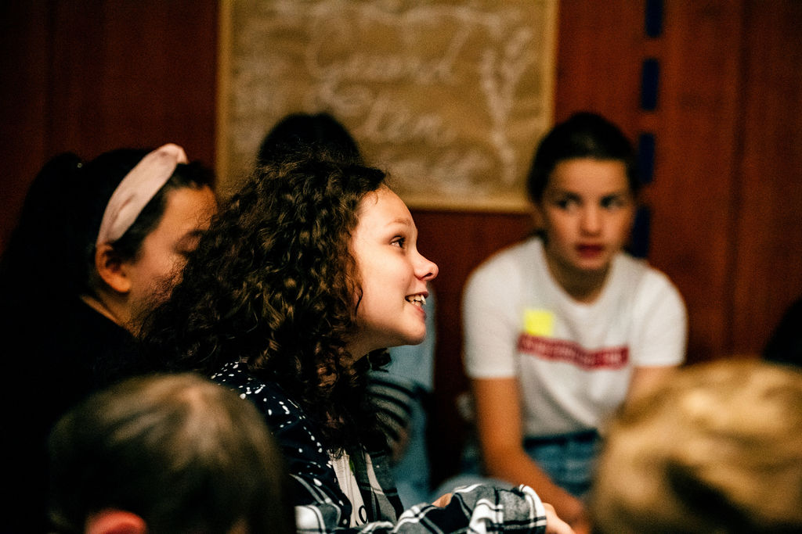

Op de kaart zie je alle scholen in Vlaanderen die de bellen samen laten rinkelen.
Schrijf je in en voeg je toe aan meer dan 10.000 tevreden leerkrachten en leerlingen.

Dit is het globale aantal leerlingen dat Saved by the Bell heeft geholpen hun basisopleiding lagere school te halen.
Verder hielp deze actie ook nog meer dan 10.000 leerlingen in het secundair onderwijs en de hogeschool.
Hierbij onze beste foto's van kinderen die een gratis opleiding kregen door Saved by the Bell.

 
